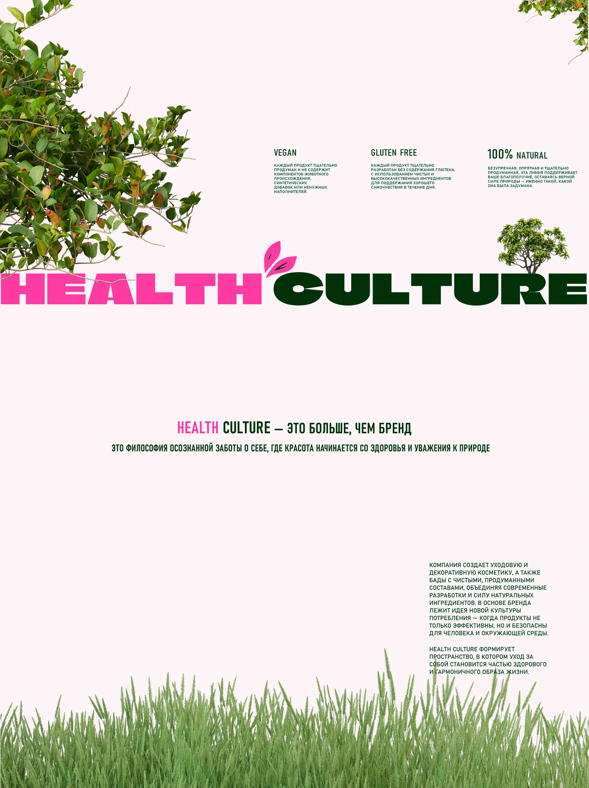
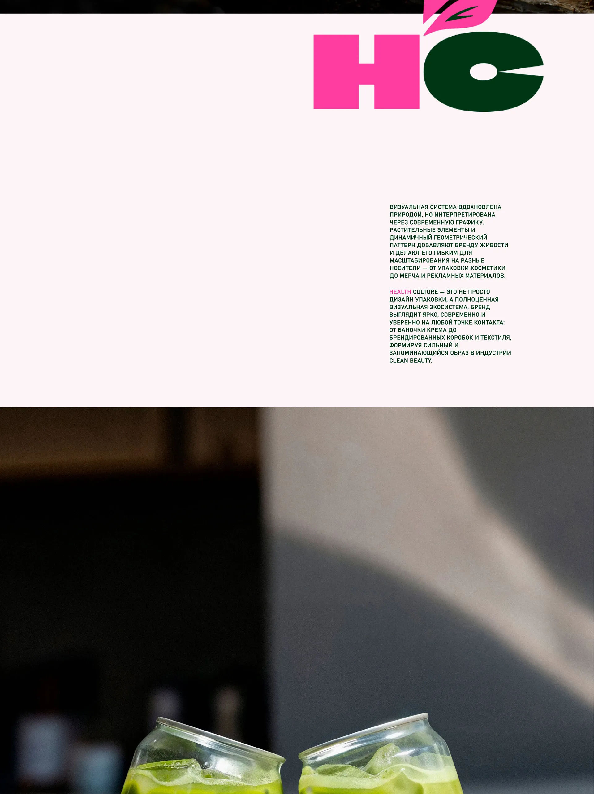

INTERDIZ · ФИРМЕННЫЙ СТИЛЬ
Культура
здоровья.
Айдентика с ощущением чистоты, природной энергии и современного ритма жизни.
О ПРОЕКТЕ
Забота
о себе —
часть культуры.
Health Culture объединяет уход за собой, осознанное потребление и внимание к природе. Визуальный язык бренда отражает этот подход через цвет, типографику и растительные мотивы.
СМЫСЛ И ПОЗИЦИОНИРОВАНИЕ
HEALTH
+ CULTURE
Название соединяет здоровье и чистоту состава с идеей осознанного образа жизни. Идентичность передаёт этот баланс на упаковке, текстиле и рекламных материалах.
ВИЗУАЛЬНАЯ СИСТЕМА
ПРИРОДА
В НОВОМ
РИТМЕ.
Органические формы сочетаются с выразительной типографикой и ярким акцентом. Зелёный связывает бренд с природой, а розовый добавляет энергии.
ЛОГОТИП И ГРАФИКА
УЗНАВАЕМО
С ПЕРВОГО
ВЗГЛЯДА.
Логотип соединяет название с растительным знаком. Графические элементы и паттерн помогают переносить айдентику на разные носители.
РЕЗУЛЬТАТ
ЯРКИЙ
И ЖИВОЙ.
Создана целостная визуальная система для бренда, который говорит о культуре здоровья и естественной красоте.
Посмотреть оригинальную презентацию



